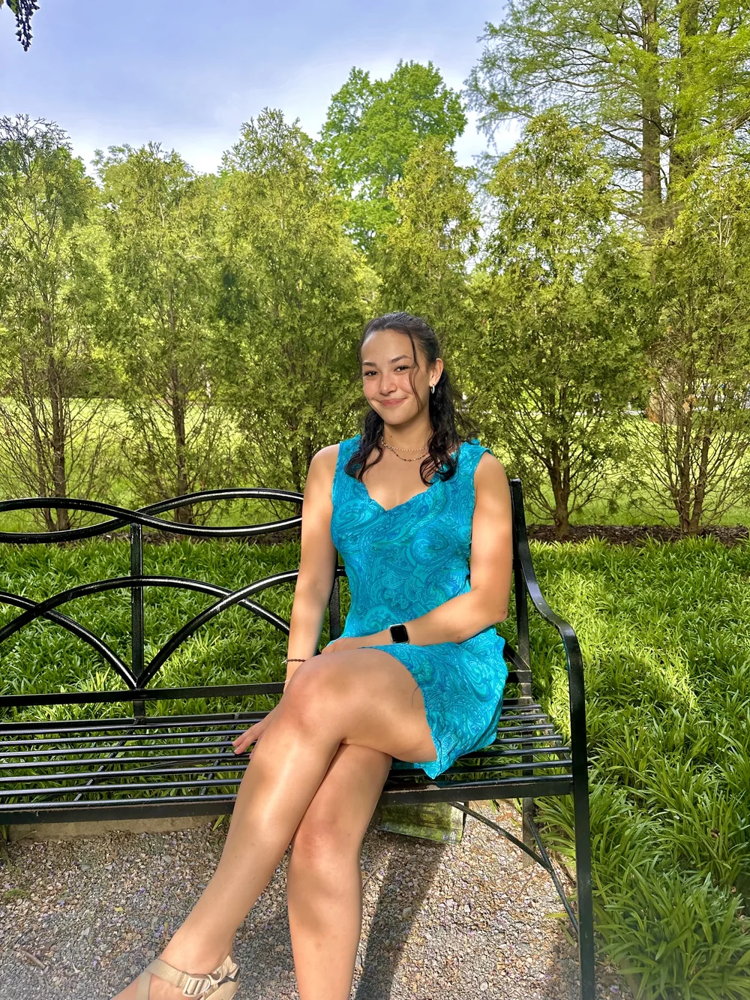

Olivia Turner
Multidisciplinary immersive media designer
My sketchbook
Click the cover to open it. Turn pages from the edges, by dragging a corner, or with your arrow keys, and click any piece to see it larger.

About me
I’m an immersive media designer focused on visual storytelling and creating engaging digital experiences. I work across 3D environments, branding, and multimedia, using tools like Unreal Engine and Adobe Creative Suite to turn simple ideas into meaningful, interactive content. I’m especially interested in projects that blur the line between physical and digital, transforming everyday objects into something more intentional and expressive.
Outside of design, I’m always creating, whether that’s knitting, crafting, or exploring new artistic ideas. I also love staying active through hiking and tennis, and I’m driven by a desire to travel, experience new environments, and draw inspiration from different cultures.
Resume
Education
- University of Maryland 2021–2026
- Bachelor of Arts, Immersive Media Design
- Honors College: Design, Culture & Creativity
Experience
- Gym Operations Lead & Program Instructor 2023–present
- Movement Gyms, Rockville, Maryland
- Coordinated climbing sessions and program schedules for hundreds of participants, and was a front-facing problem-solver for members in a fast-paced, safety-focused setting.
Projects
- Artchive, VR art preservation & exhibition platform Feb 2025
- Unreal Engine, Maya, C++, Oculus Meta Quest
- A virtual reality platform for emerging artists to preserve, organize and exhibit their work beyond the limits of physical storage: an immersive VR gallery where users upload work, customize exhibition spaces and display pieces in a more engaging format than a static online portfolio.
- Reliquary World, Unreal Engine interactive environment Oct 2024
- Unreal Engine, Maya, photogrammetry, material design, real-time rendering
- A narrative-driven project that captures an everyday object through photogrammetry, reconstructs it as a high-fidelity 3D asset, and recontextualizes it as a digital “reliquary” inside an immersive environment with custom models and dynamic lighting.
- Google, design consultant Feb 2022
- Adobe Illustrator, Adobe Photoshop
- Created the visual identity for a Google internal training summit: four logo concepts built around clarity, energy and cross-functional collaboration, with the selected design used across all summit materials.
Skills
- Software
- Unreal Engine, Unity, Maya, Blender, Adobe Photoshop, Adobe Illustrator, TouchDesigner
- Technical
- JavaScript, C++, HTML, CSS, Python, 3D modeling
Say hello
- email oliviag.turner9@gmail.com
- LinkedIn linkedin.com/in/olivia-turner9
- project portfolio view on Canva
- resume download PDF